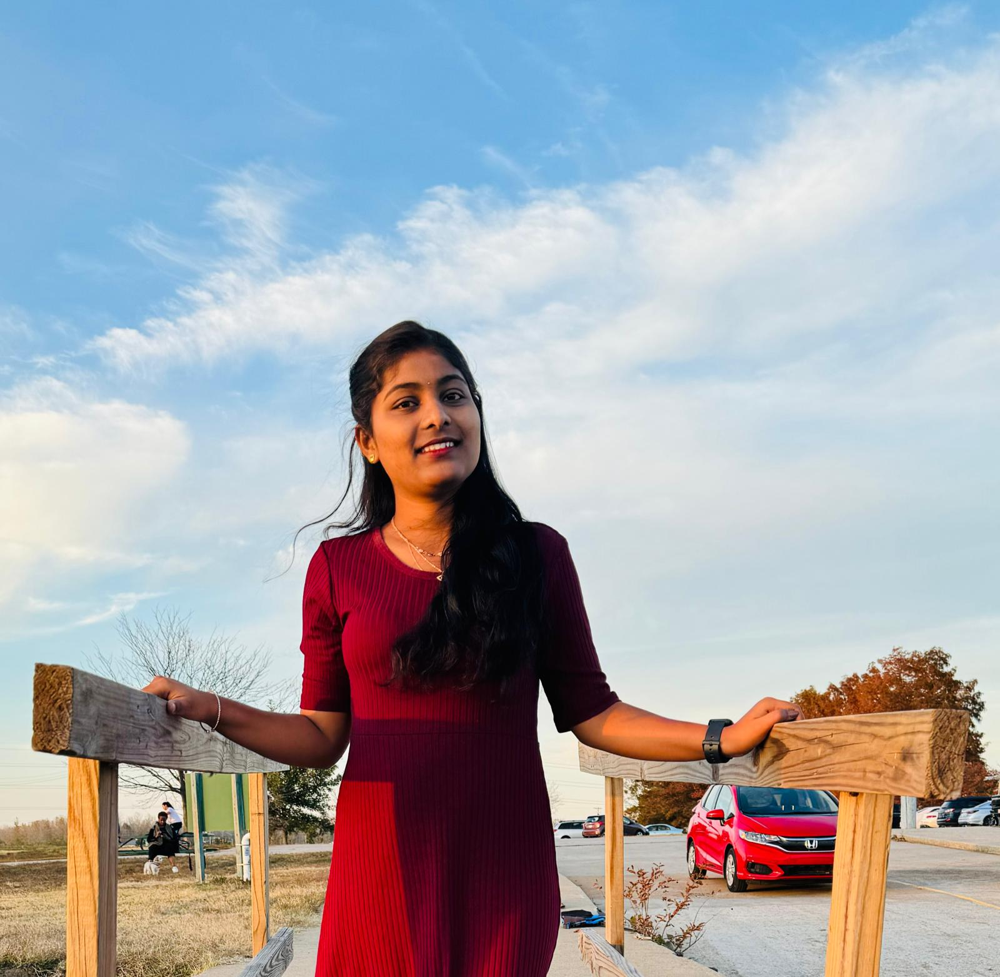

Sindhuja Allam
Hello! I'm Sindhuja Allam, a Computer Science master's student at Saint Louis University. I'm really into making computers learn from data (machine learning) and understanding how computers can understand human language (NLP). I've worked on cool projects using these technologies and even did an internship focusing on language stuff. Check out my portfolio to see some of the interesting things I've done, from creating smart algorithms to exploring the wonders of language. I'm always up for new projects and collaborations, so let's chat and create some awesome things together!